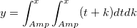

Letztes Update: 23.06.2017
Sie können eine benutzerdefinierte Anpassungsfunktion zur Summenbildung oder für ein doppeltes Integral mit LabTalk-Skript oder Origin-C-Code erstellen. Dazu verwenden Sie das Menü Hilfsmittel: Fitfunktionen verwalten.
Sie können die Anpassungsfunktion mit einer eingebetteten For-Schleife im Definitionsfeld der Funktion definieren. Nehmen Sie die folgende Funktion als Beispiel.
Angenommen, Sie definieren die Anpassungsfunktion im Feld Funktion, wie folgt:
y = sum(x, a, n); //n is a constant, and n=10
Definieren Sie dann die benutzerdefinierten LabTalk-Funktionen sum im Feld LabTalk-Funktionsdefinitionen und -initialisierungen folgendermaßen:
function double sum(double x, double a, int n) { double bb = 0; for(ii =1; ii<=n; ii++) { bb = a * x * x + bb; } return bb; }
Sie können eine Origin-C-Fitfunktion definieren, in der NAG-Funktionen aufgerufen werden, um die Integration durchzuführen. Nehmen Sie die folgende Funktion als Beispiel.

//add the header file for the NAG functions here.
und fügen Sie die Headerdatei für die NAG-Funktionen unter dieser Zeile ein:
#include <OC_nag.h>
static double NAG_CALL f(int n, double z[], Nag_User *comm) { double tmp_pwr; tmp_pwr = z[0]+z[1]; return tmp_pwr; }
void _nlsfnag_double_integral_fitting( // Fit Parameter(s): double amp, // Independent Variable(s): double x, // Dependent Variable(s): double& y) { // Beginning of editable part int ndim = 2; // the integral dimension int maxpts = 1000*2; // maximum number of function evaluation double a[2], b[2]; int k; static NagError fail; double finval; int minpts; double acc, eps; Nag_User comm; for (k=0; k < 2; ++k) // integration interval { a[k] = amp; b[k] = x; } eps = 0.0001; // set the precision minpts = 0; d01wcc(ndim, f, a, b, &minpts, maxpts, eps, &finval, &acc, &comm, &fail); y = finval; // End of editable part }
Wir stellen mehrere Tutorial zu benutzerdefinierten Integralfunktionen zur Verfügung. Unter den entsprechenden Themen können Sie bei Bedarf eine ausführliche Beschreibung der Schritte nachlesen:
Schlüsselwörter:integratieren, Integral, anpassen, Origin C, LabTalk, NAG, Addition, Summenbildung, doppeltes Integral